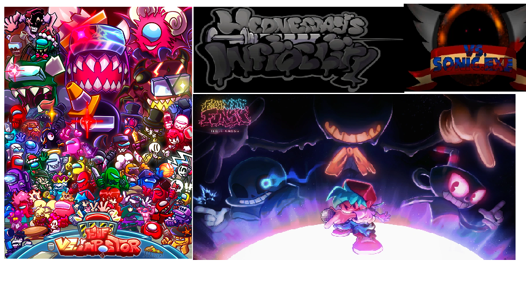
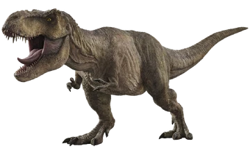
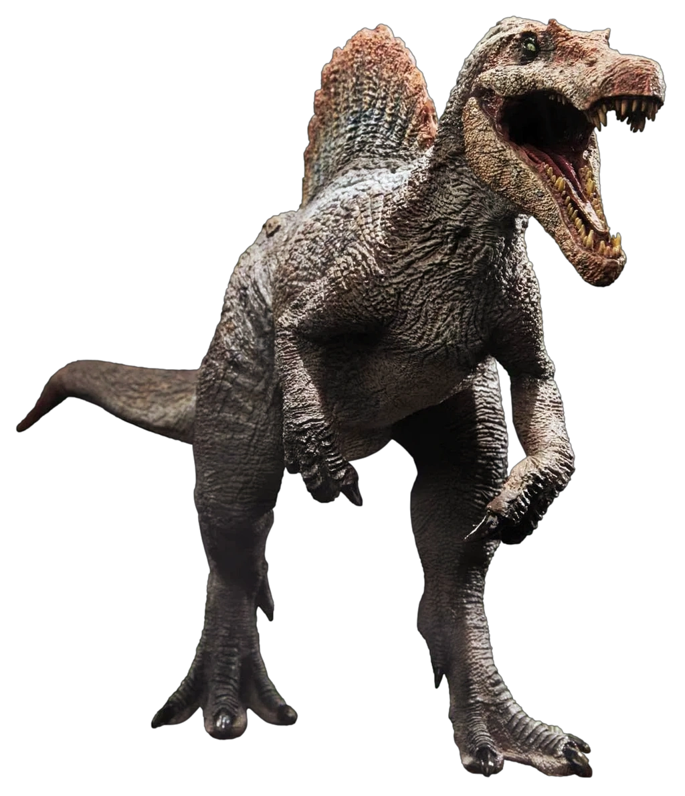
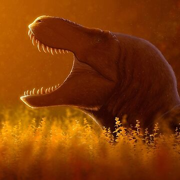

Stiven Rodríguez
Stiven Rodríguez 

 Tambien el dibujo o el arte ya que es una forma para desahogarme o irme a mi propio mundo de la imaginaciòn.
Tambien el dibujo o el arte ya que es una forma para desahogarme o irme a mi propio mundo de la imaginaciòn.
 El cual es un libro que empezó a escribír a principios de la pandemia del Coronavirus y el cual terminó en 2024.
Teniendo como fuente de inspiración a su familia.
El cual es un libro que empezó a escribír a principios de la pandemia del Coronavirus y el cual terminó en 2024.
Teniendo como fuente de inspiración a su familia.
Cosas que me gustan
Descripcion, 5 Noviembre 2024
Me gustan mucho los videojuego en especial los Indies como ya mencioné.
Mis pelìculas favoritas son:
"Space Jam el juego del siglo" y "Space Jam una nueva era"🏀
"Sonic 2 La Pelìcula⚡️
"La saga de Jurassic Park y Jurassic World 
"Sonic 2 La Pelìcula⚡️
"La saga de Jurassic Park y Jurassic World
Mi comida favorita es la Pizza🍕
Mi color favorito es el Azul en cualquier tonalidad principalmente el Azul Celeste
Los relámpagos o la electricidad como elemento me gustan bastante ⚡ ⚡ ⚡
Mi canción favorita es Megalovania, la cual es la canción de Sans (Creditos a Toby Fox, el creador del juego, personaje y canción)
Existe un juego llamado Friday Night Funkin (FNF), que es un juego de reaccion que va de presionar las teclas del teclado al ritmo de la mùsica, la mayorìa de canciones que escucho son de mods sobre este juego.
Estos son mis mods favoritos de FNF.

Mis animales favoritos son los Dinosaurios
Los dinosaurios, pertenecientes al superorden Dinosauria, fueron un grupo de reptiles terrestres que surgieron entre 245 y 231 millones de años, durante el Triásico. Dominantes durante 135 millones de años, desde el Jurásico hasta el Cretácico, se extinguieron en su mayoría hace 66 millones de años, al final del Cretácico, debido a una extinción masiva. Se cree que las aves evolucionaron de dinosaurios terópodos en el Jurásico, por lo que son consideradas un subgrupo de dinosaurios. Así, se pueden clasificar en dos grupos: dinosaurios aviares (las aves) y dinosaurios no aviares (todos los dinosaurios extintos).
Mis Dinosaurios favoritos son: El Tiranosaurio-Rex, El Spinosaurio y El Giganotosaurio
 
El Tiransaurio-Rex es absolutamente mi animal y dinosaurio favorito
El Tyrannosaurus rex (T. rex) fue un dinosaurio carnívoro que vivió hace entre 68 y 66 millones de años, durante el Cretácico. Con una longitud de hasta 12 metros y un peso de aproximadamente 7 toneladas, era uno de los depredadores más grandes de su época. Su enorme cabeza estaba equipada con poderosas mandíbulas y dientes de hasta 20 cm, capaces de triturar carne y huesos. Aunque sus brazos eran pequeños, con solo dos dedos, eran fuertes y adaptados para un uso desconocido. Se cree que el T. rex era un depredador dominante, cazando otros dinosaurios, aunque también podría haber sido un carroñero. Tenía una visión aguda, lo que le ayudaba a localizar presas a gran distancia. Sus fósiles se han encontrado principalmente en América del Norte (Montana, Wyoming, Dakota del Sur y Colorado). El T. rex se extinguió hace 66 millones de años, junto con otros dinosaurios, debido a un evento de extinción masiva al final del Cretácico. Este dinosaurio es ampliamente conocido en la cultura popular debido a su tamaño, fuerza y su protagonismo en películas y documentales.
Simplemente es mi favorito y seamos sinceros "EL REY ES EL REY"
